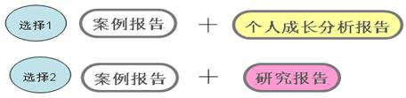

根据全军培训中心和鉴定中心对以往考生情况的分析 ：
有能力撰写《研究报告》的学员在参考学员中比列非常小。
对自己的尊重、对职业的尊重、对答辩老师的尊重！
（没有实际工作经验的学员，可以借鉴或经别人指导，切忌生搬硬套或他人代写)。军队：由各单位宣传部门负责统一提交，但有的单位考生人少，宣传部门会把这个任务直接告诉本人，由本人自行联系提交。
标题、署名、摘要、正文、注释及参考文献是学术论文必需的结构要素。
标题即论文的名称，应当能够反映论文的内容，或是反映论题的范围，尽量做到简短、直接、贴切、精炼、醒目和新颖。
举例：《一例新兵适应不良引起的焦虑情绪的案例报告》
《个人成长分析报告》
《多彩人生》 一般不超过20个字。
单位+姓名
摘要应简明扼要地概括文章的主要内容，一般不超过300-500字，或者是论文总字数的5%～10%。
是论文的主要内容。
案例报告和个人成长分析不完全属于一种类型的论文，所以，正文部分的撰写有各自的要求，在下面会详细说明。
注释是对论文中需要解释的词句加以说明，或是对论文中引用的词句、观点注明来源出处。注释一律采用尾注的方式（即在论文的末尾加注释）。
论文的末尾须列出主要参考文献的目录。
注释和参考文献的标注格式为：
1.许又新著.神经症.北京：人民卫生出版社．1993．20－21
参考文献：
郭念锋著．临床心理学．北京：科学出版社．1995
（精神分裂症、抑郁症，偏执性精神病，躁郁症）肯定不能写；
最好写写自己熟悉的题材，我们可以多写一些军事题材的案例。
尽量写自己做的案例，没做过案例的也可以借鉴别人的。
需要简单介绍什么人，什么原因出现了哪些问题，诊断为什么，用什么样的方法，经过几次咨询，最后达到什么样的效果，是要表明内容，而不是列出标题。
在文章全文完成之后提炼出来。
本案例是针对一名战士受批评后心理受挫而引起的一般心理辅导案例。咨询师根据求助者的情况采用了认知行为疗法、阳性强化法、经过4次咨询，求助者的焦虑情绪和睡眠障碍基本解决，取得了比较好的干预效果。
求助者李某是一名护士，两个多月前因为在工作中出现失误受到了领导批评，之后出现工作时紧张不安、总担心出错，因此反复检查，工作效率下降，同时有睡眠差，生活兴趣减退等症状，心理测验结果显示求助者有中度焦虑和轻度抑郁，其心理问题符合严重心理问题的诊断标准。咨询师在和求助者商议后，根据其个性特征和问题的特点采用了合理情绪疗法对其进行干预，经过4次咨询，求助者情绪好转，工作也比较自如，取得了比较好的咨询效果。
关键词：严重心理问题 合理情绪疗法
| 1、一般资料 | 包括人口学资料、个人成长史、精神状态、身体状态、社会功能、心理测验结果。 |
| 2、主诉和个人陈述 | 问题发生发展过程，求助原因 |
| 3、观察和他人反映 | 心理咨询师观察的结果和求助者亲友反映情况 |
| 4、评估与诊断 | 包括心理状态的评估、诊断与鉴别诊断、诊断依据 |
| 5、咨询目标的制定 | 具体目标、最终目标、近期目标与长远目标。 |
| 6、咨询方案的制定 | 咨询方法与原理、双方责任与义务、时间和费用等 |
| 7、咨询过程 | 咨询阶段的划分，各阶段的任务与完成 |
| 8、咨询效果评估 | 求助者自我评估及心理咨询师的评估和心理测验。 |
包括人口学资料、个人成长史、精神状态、身体状态、社会功能、心理测验结果。
个人成长史里面可以介绍一些求助者小时候的一些重要成长经历； 例如出生情况，学业工作状况，小时候较长时间离开父母等，如果有疾病史最好列出，还有求助者的大概个性。
选择测验要注意测验的适用性，测验结果一般要写全，标准分要标明，要有简单的结果解释；例如SCL－90总分超过160，阳性项目数超过43项需要写出来，超过2分的因子分也需要写出具体得分。
王某，女，16岁，初三学生，与父母同住。父母为国家干部，家庭经济状况良好，父母双方家族无精神疾病历史。
王某是独生女，足月顺产，母亲身体健康，孕、产及哺乳期未服用特殊药物。3岁上幼儿园，6岁上学后学习成绩一直很好，又能帮助其他同学，深受同学和老师的喜爱，并成为班里的小干部。12岁来月经，周期不稳定，身体健康，未患过重大疾病。6岁以前父亲工作忙，母亲工作三班倒，多与外公外婆一起生活。6岁以后跟父母同住。父母关系好，对她要求高。从小活泼外向，处处严格要求自己，追求完美。
SCL-90测试各因子分如下：躯体化2.4，强迫症状1.7，人际敏感2.5，抑郁2.6，焦虑3.8，敌对1.3，恐怖1.3，偏执1.0，精神病性1.7，其他1.6；总分195；阳性项目数47个。
测验结果显示躯体化、人际敏感、抑郁、焦虑因子分明显高于常模。
简要的说明目前的主要问题，要写明问题存在的时间（病程），精练、准确、症状不能太多，不超过20个字。不论求助者说出有多少症状 ，只取与诊断关系密切的写入主诉，其余的放在个人陈述中去描述 ，数字统一用阿伯拉数字。
例：“因考试失利而紧张不安、失眠、烦躁、提心吊胆、情绪低落；学习没有兴趣，成绩不断下降；1个月。”应改为：“1月来因考试失利而焦虑不安、情绪低落、睡眠差。”
包括求助者心理问题发生发展过程，求助原因；
例：“四个月以前父亲突发心梗去世，自己和父亲感情很好，所以心情一直不好，两个多月前的一天，张某早上醒来，觉得胸闷，怀疑自己得了心脏病，去医院做心电图却又一切正常，自此开始经常觉得身体不适，有时怀疑自己的肝有毛病，有时感觉是肺有毛病，听见别人有什么病，也总联想到自己，担心自己会不会得上这种病。其间做了一次全面的身体检查，各项体检和化验结果各项指标均正常，但还是担心自己的身体会有什么毛病，这段时间睡不好觉，也吃不下饭。白天忙于工作，感觉还可以，如果半夜醒来就会胡思乱想，无法自控，“非常痛苦”为此前来求助。”